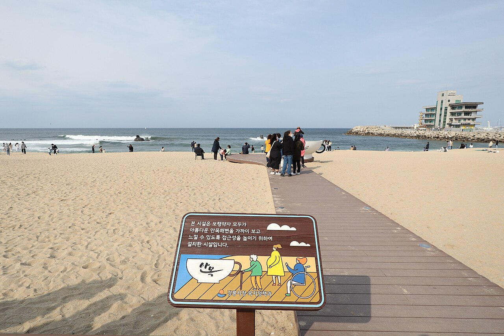
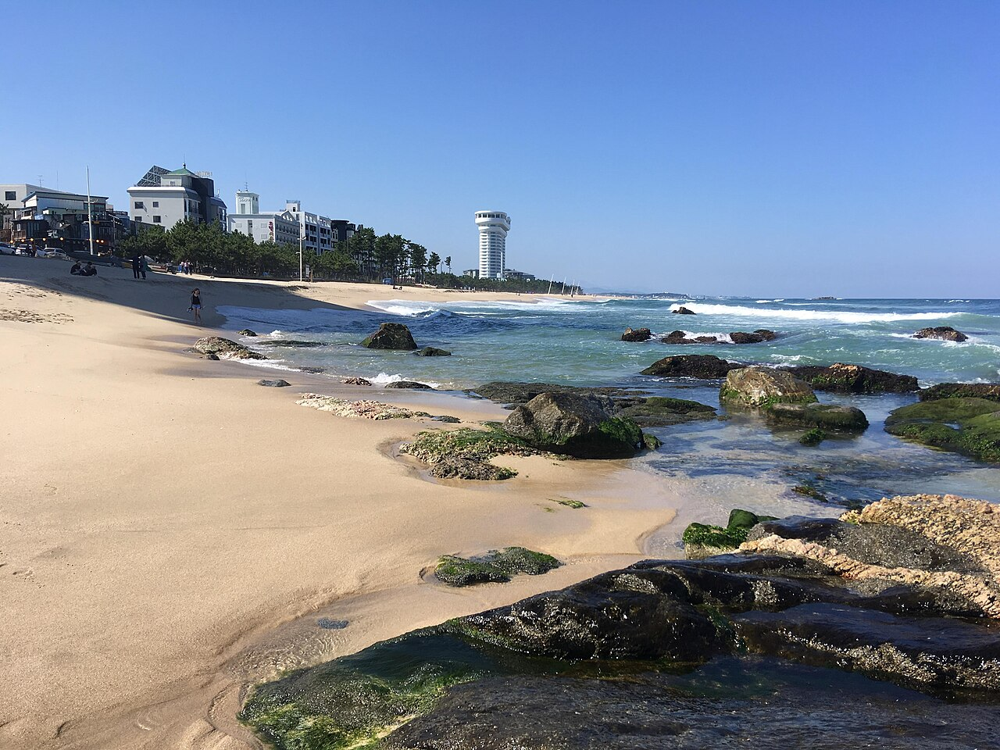
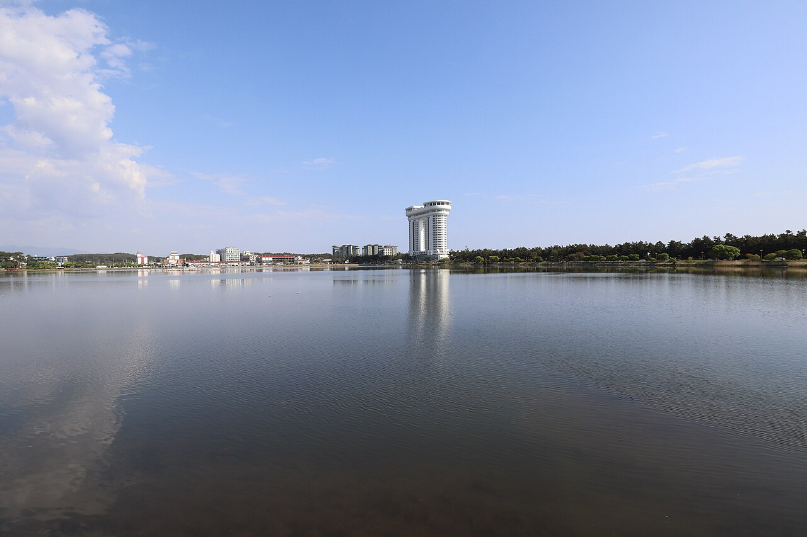
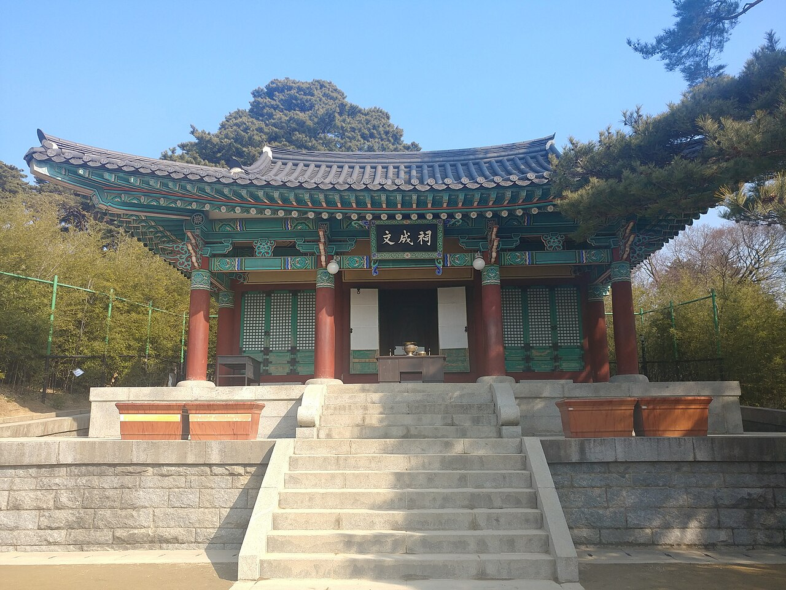
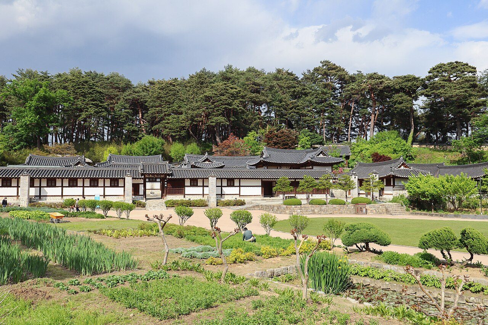
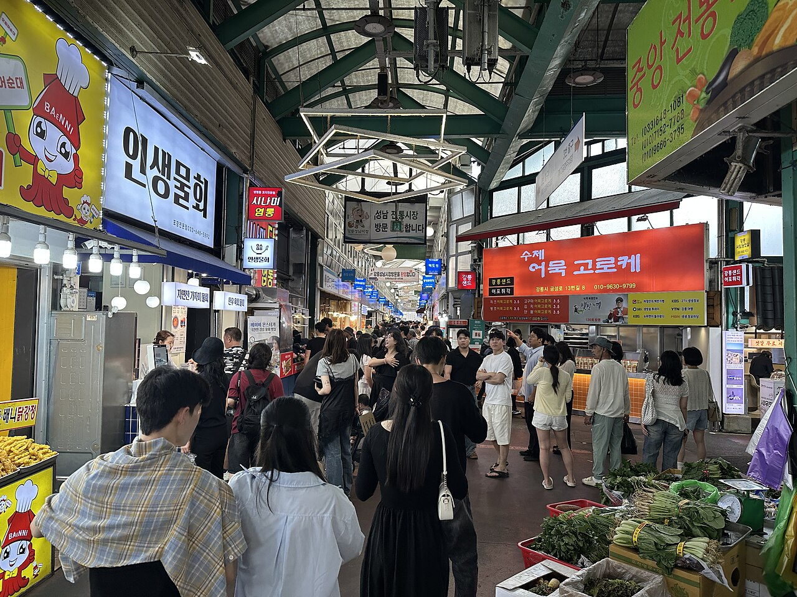
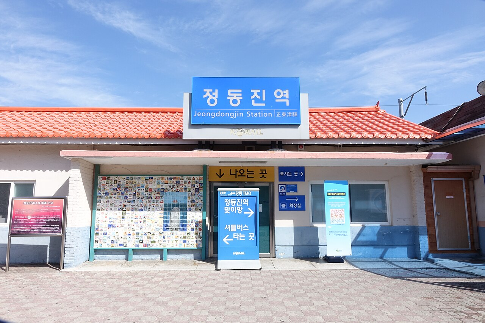
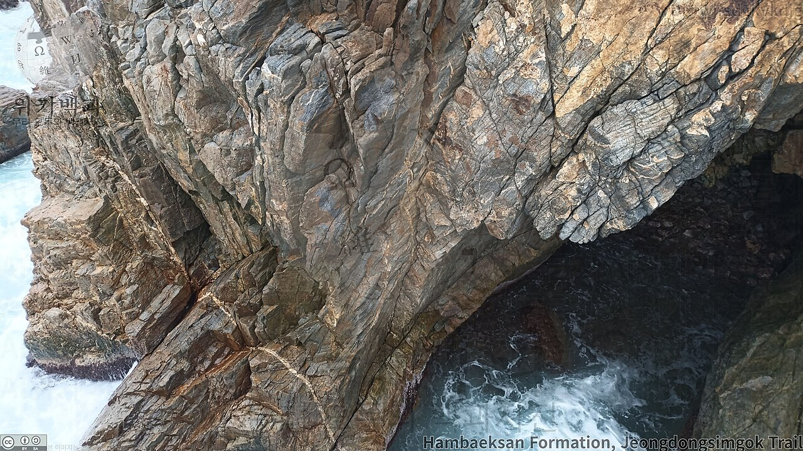
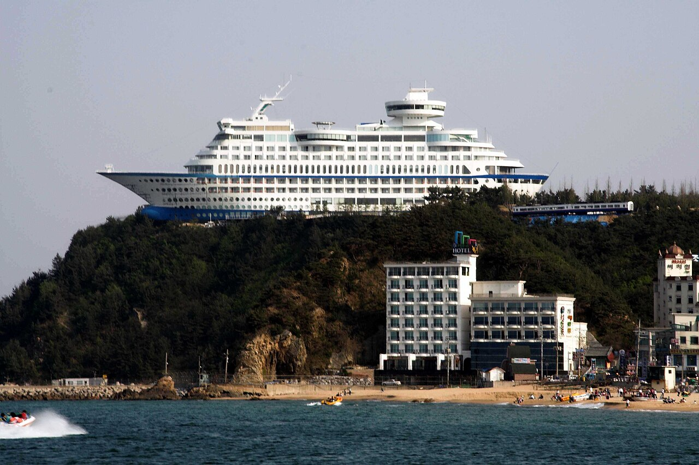

From ocean-view cafés on Anmok Beach to the historic Ojukheon and Jeongdongjin's Badabuchae-gil! Enjoy Gangneung's sea and history in a single day with our A · B · C courses.
Gangneung day trip in 3 courses: Anmok Coffee Street, Gyeongpo Lake, Ojukheon and the Badabuchae-gil Trail. Pick the course that suits you below, and check each spot's highlights, suggested time, address and local tips.
From seaside cafés on Anmok Coffee Street to Gyeongpo and Gangmun beaches and a lakeside walk
Suggested route: Anmok Beach Coffee Street → Gyeongpo Beach & Gangmun Beach → Gyeongpo Lake & Gyeongpodae Pavilion
A hand-drip coffee while gazing at the East Sea through the window

Ocean-view cafés lined up along the beach
1. Anmok Beach Coffee Street
안목해변 커피거리 · Café hopping / Ocean view
Anmok Beach Coffee Street began with a row of coffee vending machines on the beach and has grown into Korea's best-known coffee street, full of roasteries and large ocean-view cafés. Many have rooftops and floor-to-ceiling windows, perfect for watching the sea over coffee, and you can stroll along the beach to the Solbaram Bridge leading to Namhangjin. The Gangneung Coffee Festival is held here every autumn.
Choose a rooftop café on the second floor or higher to fit the beach and horizon in one frame. At sunset, walk south toward Solbaram Bridge.

Rocks and waves on the Gyeongpo coast
2. Gyeongpo Beach & Gangmun Beach
경포해변 & 강문해변 · Beach / Seaside walk
Gyeongpo Beach is one of the East Coast's best-known beaches, with wide fine sand and a pine forest behind it. It's packed in summer and quiet the rest of the year, perfect for a seaside stroll. A short walk south brings you to Gangmun Beach, where the Gangmun Sotdae Bridge spans the channel between Gyeongpo Lake and the sea and the village's guardian "jinttobaegi" totem poles give it a simple fishing-village feel.
Gyeongpo Beach to Gangmun Beach is about a 20-minute walk along the coast. There are plenty of ocean-view cafés around Gangmun Beach for a break.

Gentle ripples on Gyeongpo Lake
3. Gyeongpo Lake & Gyeongpodae Pavilion
경포호 & 경포대 · Lakeside walk / Pavilion
Gyeongpo Lake is a lagoon connected to the sea, with a well-kept 4 km walking and cycling path around it. Gyeongpodae, the pavilion on a lakeside hill, is one of the "Eight Scenic Views of Gwandong" and is famous for moon-viewing — legend says five moons rise here: in the sky, the sea, the lake, your wine cup and your beloved's eyes. In spring, cherry blossoms line the shore, making it Gangneung's top flower spot.
Rent a bike and ride around the lake. Parking is hard during cherry blossom season in early April, so use public transport.
🏯 Course B: Legacy of Yulgok & Old Downtown Food Course
⏱️ About 5–6 hours📍 About 7.0 km
The tranquil hanok houses of Ojukheon and Seongyojang, plus the food of Jungang Market
Suggested route: Ojukheon House → Seongyojang House → Gangneung Jungang Market & Wolhwa Street
The charm of 500-year-old houses and warm local treats in the market

The main house of Ojukheon, showing mid-Joseon residential architecture
1. Ojukheon House
오죽헌 · Historic site / Traditional architecture
Ojukheon preserves the look of a mid-Joseon aristocratic home and is famous as the birthplace of Shin Saimdang and her son, the scholar Yulgok Yi I. The main house is designated a National Treasure (Bomul), and it takes its name from the bamboo with crow-black stems growing around it. The grounds also include Munseongsa Shrine for Yulgok and the Gangneung Municipal Museum, making for a calm visit through history and culture.
Suggested time
about 1–1.5 hours
Address
24 Yulgok-ro 3139beon-gil, Gangneung, Gangwon-do
Travel tip
Ojukheon is the scene on the back of Korea's 5,000-won bill. Bring one and take a photo from the same angle!

Seongyojang's hanok buildings on spacious grounds
2. Seongyojang House
강릉 선교장 · Traditional hanok / Historic house
Seongyojang is a large upper-class residence built in the late Joseon period by descendants of Grand Prince Hyoryeong and lived in for generations; it is a designated National Folklore Cultural Heritage. Its name, "house of the boat-bridge village," comes from the days when visitors crossed Gyeongpo Lake by boat. The inner quarters, men's quarters and annexes sit on wide grounds, and Hwalraejeong, the pavilion over the pond at the entrance, shows a different face every season. Some buildings offer hanok stays.
Suggested time
about 1 hour
Address
63 Unjeong-gil, Gangneung, Gangwon-do
Travel tip
It's most beautiful in summer when lotus flowers fill the pond in front of Hwalraejeong. About 10 minutes by car from Ojukheon.

A lively alley in Gangneung Jungang Market
3. Gangneung Jungang Market & Wolhwa Street
강릉중앙시장 & 월화거리 · Traditional market / Local food
Jungang Market is where Gangneung locals shop and a must-visit food spot for travelers. Try crispy dakgangjeong (sweet glazed fried chicken), potato pancakes, fish-cake croquettes and spicy jang-kalguksu noodles. Right next to the market, Wolhwa Street turns the land left behind when the old Yeongdong Line went underground into a promenade and plaza, named after Muwollang and Lady Yeonhwa from a local legend.
The train station closest to the sea, a cliffside coastal trail and a cruise-ship observatory
Suggested route: Jeongdongjin Station & Beach → Jeongdong-Simgok Badabuchae-gil Trail → Jeongdongjin Sun Cruise & Coastal Views
A walk along East Sea cliffs shaped by tectonic shifts 23 million years ago

Jeongdongjin Station, right in front of the sea
1. Jeongdongjin Station & Beach
정동진역 & 정동진해변 · Sunrise spot / Train station
Jeongdongjin means "the port due east of Hanyang (Gwanghwamun, Seoul)," and its station is famous for the sea spreading out right in front of the platform. It became a nationwide sunrise destination after appearing in the 1990s drama "Sandglass," and crowds gather here on New Year's Day. A giant hourglass sculpture and a time museum near the beach are also worth a look.
To catch the sunrise, take an early-morning train from Seoul. A platform ticket may be required to enter the station.

A sea cave in the coastal cliffs where waves wash in
2. Jeongdong-Simgok Badabuchae-gil Trail
정동심곡 바다부채길 · Coastal trekking / Geological site
The Jeongdong-Simgok Badabuchae-gil is a coastal trail of about 2.9 km from near the Jeongdongjin Sun Cruise parking lot to Simgok Port. It follows coastal terrace formations created by tectonic movement about 23 million years ago, and the area is designated a natural monument. Named because its shape resembles an open fan ("buchae"), the trail was closed off by military fences for decades before opening to visitors.
Suggested time
about 1–1.5 hours one way
Address
Jeongdongjin-ri, Gangdong-myeon, Gangneung, Gangwon-do (Jeongdong ticket office, near the Sun Cruise parking lot)
Travel tip
The trail may close due to high waves or strong winds, so check before you go. It's a one-way route — plan your taxi or bus back in advance.

Sun Cruise, a cruise-ship-shaped building on a cliff
3. Jeongdongjin Sun Cruise & Coastal Views
정동진 썬크루즈 & 해안 전망 · Viewpoint / Unique architecture
Jeongdongjin Sun Cruise is famous for its unusual shape — like a giant ship perched on a hilltop. Even non-guests can pay an entrance fee to visit the garden, sculpture park and observatory, looking down over Jeongdongjin Station, the beach and the endless East Sea. It's close to the Badabuchae-gil Jeongdong ticket office, so it fits nicely before or after your trek.
It's also a famous sunrise spot, and many visitors come at dawn. About 5 minutes by car from Jeongdongjin Station.
Opening hours, fees and access restrictions can change with the season and local conditions. Please check each place's official information before you visit.